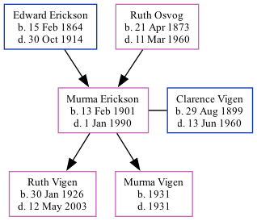

Murma Olivia Vigen (née Erickson) 1901 - 1990
[ Home ] | [ Surnames Index ] | [ Family History ]The child of Edward Erickson and Ruth Osvog, , Murma was the great-grandmother of Stephanie Hardesty (née Teten), was born in Palestine, Ia., USA on Feb 13, 19011,2,3,4,5 and married Clarence Vigen (with whom she had 2 children: Ruth Carol and Murma Jean) in Sioux City, IA on Jun 22, 1921.
During her life, she was living in Canton, Lincoln, South Dakota in 19101; in Mapleton, Monona, Iowa in 19302; in Sioux City, Woodbury, Iowa in 19353; in Sioux City, Iowa, USA in 19376; and in Nebraska City, Otoe, Nebraska, USA on Apr 1, 19403 which is where she died on Jan 1, 19905.
Parents
- Edward L was born on Feb 15, 1864
- Ruth C was born on Apr 21, 1873
Children
- Ruth Carol was born on Jan 30, 1926
- Murma Jean was born in 1931
Citations
- 1910 United States Federal Census Ancestry.com Operations Inc (Age in 1910: 9; Marital Status: Single; Relation to Head of House: Daughter)
- 1930 United States Federal Census Ancestry.com Operations Inc (Age: 29; Marital Status: Married; Relation to Head of House: Wife)
- 1940 United States Federal Census Ancestry.com Operations, Inc. (Age: 39; Marital Status: Married; Relation to Head of House: Wife)
- Iowa, Births and Christenings Index, 1857-1947 Ancestry.com Operations, Inc.
- Social Security Death Index Ancestry.com Operations Inc
- U.S. City Directories, 1821-1989 (Beta) Ancestry.com Operations, Inc.
Family Tree
Data (GEDCOM) maintained by Jay Weston Hannah, Omaha, Nebraska, USA.
Website generated by ged2site. Last updated on Jun 18, 2024.